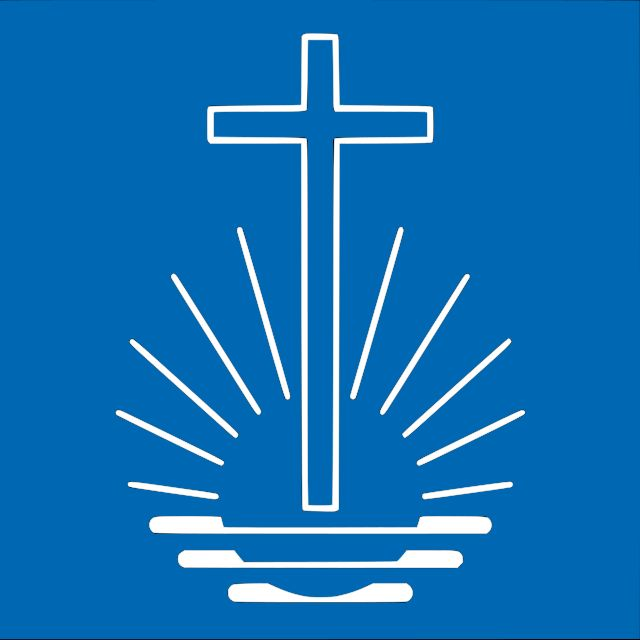

Église Néo-Apostolique du Canada
Communauté d'Ottawa-Est

Bienvenue sur le site officiel de la communauté d'Ottawa Est de l'Église Néo-Apostolique.
L'Église Néo-Apostolique est une communauté chrétienne qui se caractérise par une forte dimension apostolique et par un souci constant de proximité avec les fidèles. Elle se distingue par sa structure hiérarchique, dans laquelle les ministres, notamment les apôtres et les évangélistes, jouent un rôle clé dans la transmission de la foi et l’accompagnement spirituel.
Issue d’un renouveau au sein du christianisme, l’Église Néo-Apostolique a pour ambition de revenir aux fondements apostoliques, tout en s’adaptant aux enjeux contemporains. Elle s’appuie sur la tradition des enseignements bibliques, interprétés à la lumière de la vie moderne, pour guider ses membres dans leur parcours spirituel.